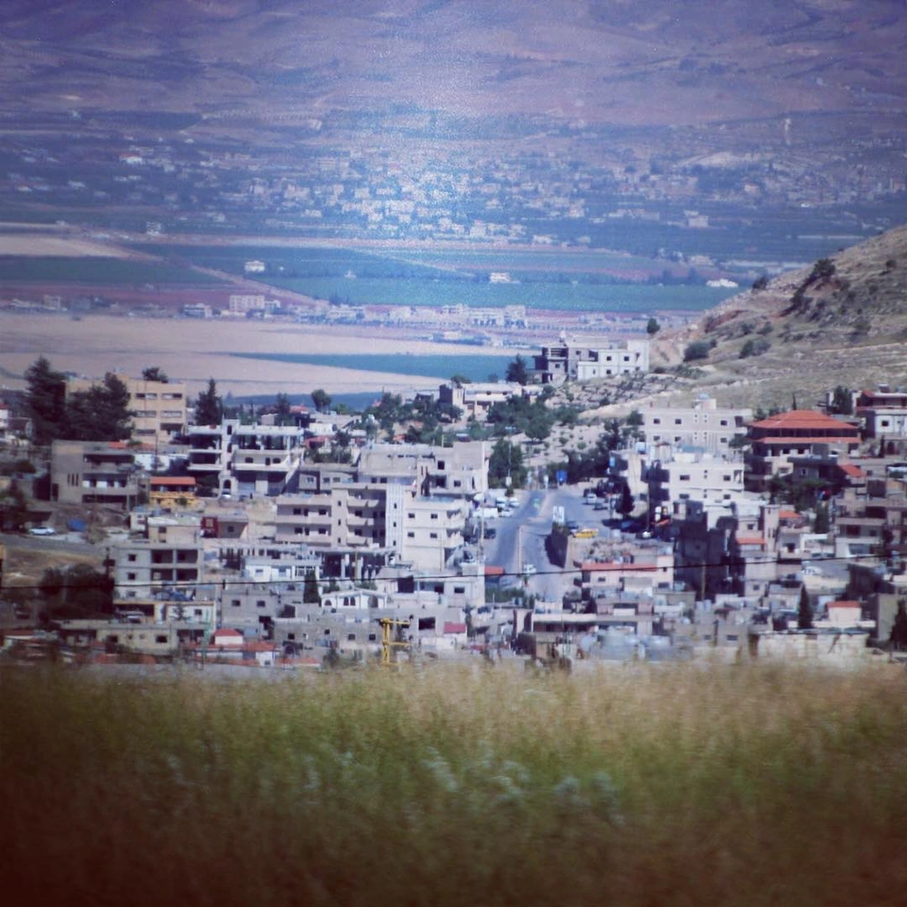

Announcement
The municipality launches its official website
Services, office hours, emergency numbers and town news are now available in one place, on phone, tablet and computer.
Read more about The municipality launches its official website →